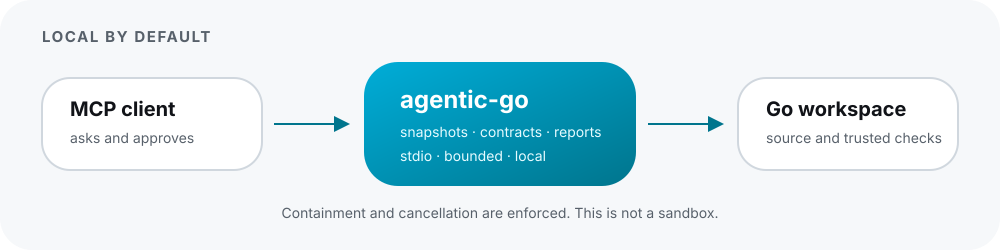

Safety & Trust Boundaries
agentic-go is engineered with transparent security controls. We state clearly what is executed, what can be modified, and why we define our protections as containment rather than sandboxing.

Containment vs. Sandboxing
We deliberately avoid claiming that agentic-go runs in a secure sandbox:
- Containment Controls: All filesystem lookups, AST analysis, and subprocess operations are resolved against the symlink-canonicalized workspace root. Operations outside the workspace are rejected. Subprocesses share cancellation contexts, bounded stderr/stdout buffers, and execution timeouts.
- No Hostile-Code Isolation: When verification compiles and runs Go tests (e.g.
go test ./...), that code runs with the exact OS permissions and credentials of the user running the MCP process. Do not execute verification against untrusted, malicious repositories.
Tool Execution Classes
| Tool Class | Tools | Execution Privileges & Guarantees |
|---|---|---|
| Read-Only / Closed-World | go_workspace_brief, go_search, go_symbol_context, go_audit_concurrency, go_audit_errors |
Never executes compilers, test binaries, or shell commands. Operates purely by reading contained files and parsing ASTs. Completely safe for automatic client execution. |
| Execution Tools | go_test_structured, go_race_report, go_verify_change, go_flake_finder, go_benchmark_diff |
Invokes local go toolchain to compile packages and run tests. Subject to user process privileges, timeouts, and cancellation. |
| Guarded Mutation | go_refactor |
Deterministic, content-addressed AST refactorings. Only modifies existing contained non-generated files after rechecking all file preimages against recovery journals. |
Guarded Refactoring Invariants
The go_refactor tool provides preview and apply capabilities for renames, formatting, and imports:
- Content-Addressed Plan: Calling refactor preview produces an immutable plan ID bound to the exact Snapshot Ref and file preimages.
- Preimage Recheck: Before applying any edit,
agentic-goverifies that every target file still matches its preimage bit-for-bit. If files changed externally, apply aborts immediately. - Recovery Journal: A durable recovery journal is written prior to disk writes. If an operation is interrupted,
agentic-go doctor --recovercan restore the clean state. - Non-Generated Files Only: Refactoring will never overwrite files matching standard generated file headers (e.g.
DO NOT EDIT). - Zero Git State Mutation: Refactoring never runs
git commit,git add, or branch commands. Your Git staging area and history remain 100% under your control.
Network & Telemetry Policy
agentic-gocommunicates exclusively over localstdio.- It makes zero outbound network requests and has no tracking or analytics beacons.
- The bundled
goplscompanion is spawned with telemetry permanently disabled.